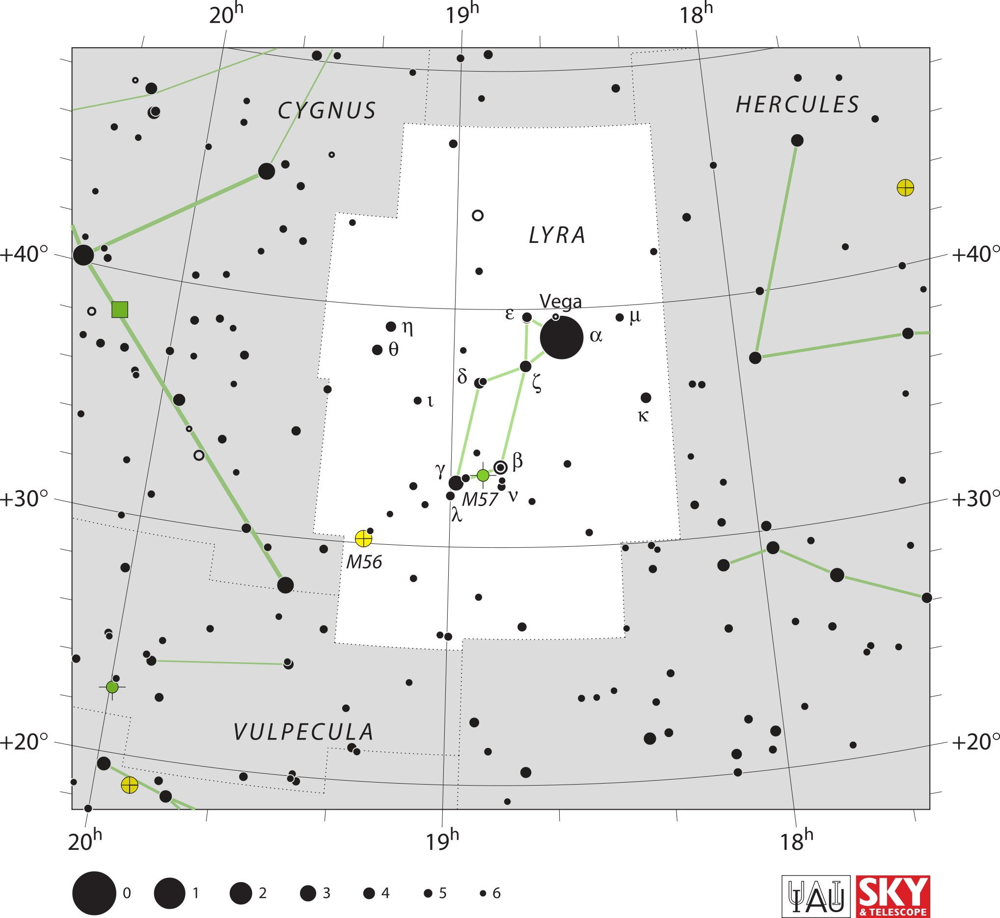

<div data-role="page" id="lyra" data-theme="a">

	<div data-role="header">
		<a href="#home" data-icon="back" data-rel="back">Back</a>
		<h1>Lyra</h1>
		<a href="#home" data-icon="home">Home</a>
	</div>

	<div data-role="content">

		<div class="cssImageMap">
			

			<a href="../messier/m56.html" class="messier" data-x="680"
				data-y="1060" data-width="130" , data-height="130"></a>

			<a href="../messier/m57.html" class="messier" data-x="920"
				data-y="980" data-width="150" , data-height="90"></a>


			<a href="cygnus.html" class="constellation" data-side="left"
				data-x="535" data-y="185" data-width="300" data-height="80"></a>

			<a href="hercules.html" class="constellation" data-side="right"
				data-x="1475" data-y="170" data-width="300" data-height="80"></a>

			<a href="vulpecula.html" class="constellation" data-side="left"
				data-x="450" data-y="1450" data-width="400" data-height="80"></a>
		</div>

		<div id="here">
			<h2>Lyra</h2>

			<p>Image Credit: IAU and Sky & Telescope magazine (Roger Sinnott
				& Rick Fienberg)
		</div>
	</div>
</div>
